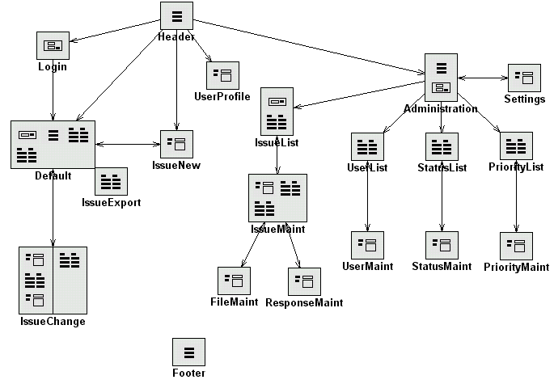

UltraApps Issue Manager
Standard/Free Version 2.0
Introduction
Issue Manager is a web-based application designed to help a workgroup keep track of issues and tasks via a shared central resource. The system was designed specifically with the IT department in mind, where quick access to shared data and history is a requirement, both from a internal organizational perspective, as well as to fulfill the needs of the customers.
The data is stored centrally on the server, which make it specially suitable for distributed teams who can use just the web browser to access it. No local software needs to be installed on the client and all web browsers are supported.
The application itself can be installed virtually on any web server, whether internal within the organization, or external, hosted by a web hosting company. Several distribution versions are provided, including ASP and C# for installation Windows servers. The distributions do not include any custom components and full source code is available for examination and customization.
Additionally, you may add your own logo in the header, change color scheme via CSS (Cascading Style Sheets), or even remove, add or rename fields shown on the screen.
Site Diagram

The above Site Diagram illustrates relations between all
pages that make up the application.
Access/Security
Issue Manager requires User Login and it is configured with 3 default users and 4 security levels, as shown below.
| Default Login | Default Password | Security Level |
| guest | guest | 1 - Standard |
| tom | tom | 2 - Manager |
| admin | admin | 3 - Administrator |
In the user administration section Issue Manager displays User Types: Customer, Developer and Administrator, which are just a sample data and can be modified within the application code. Issue Manager doesn't distinguish the names but uses numeric Security Levels (1, 2 and 3) as follows:
Security Level 1:
All users who are configured in the system must be assigned the minimum security level = 1, and are
automatically allowed to submit, view and respond to all issues.
Security Level 2:
This security level can be assigned to users only by the administrator, and permits those users to
access some of the administrative areas.
Security Level 3:
This is the highest security level available only to administrators and allows them to modify and
delete users, configure system settings, and modify existing issues and responses.
Login Panel
All users trying to access Issue Manager are required to login with a username and password supplied by the administrator. By default the application has one administrator account with the username admin and password admin. Use these credentials to log-in for the first time.
Main Panel
As soon as you Login, you should see the main screen of the system. This panel displays all the issues and their summaries
The following sections make up the panel:
- Issue List
This is the main grid on the page, and it lists all issues according to the last submitted search
criteria.
The issue list can be sorted by any of the available columns by simply clicking on column heading.
- Issue Search
The user can search all issues by submitting search criteria in the Search section. The
full-text search can be performed on the keyword provided, or the user may choose to select on of
preset condition using provided drop-down lists.
- Bookmarks
Bookmarks allows the user to view particular issues based on the user currently logged-in.
- Summary
This section shows the number of issues in each of the the statuses.
Submitting New Issues
Users can submit new Issues to to system by clicking "Add New
Issue" link that is always shown in the header.
The user then enters Issue Name and Issue Description and selects various parameters regarding the
issue, such as the Priority and Status, as well as the Person assigned to the Issue.
The User may also upload a file related to the issue, but only if he is permitted to do so, which is
specified in his User Profile.
Viewing and Responding to Issues
When the user clicks on any of the issues in the in Issue List of the Main Panel , he is presented with the Issue Detail Panel that provides full information about this issue.
The following sections make up the Issue Details Panel
- Issue Description
This section contains full details of the original issue posted.
- Issue Response History
The Response History section shows all the responses made to the current issue with their relevant
response details.
- Issue Response
This section allows the user to submit new response to the currently selected
issue. This sections also facilitates re-assignment the issue to a new user,
updating the priority of the issue,
updating the status of the issue and uploading a file attachment.
- Attached Files
This section shows the list of files attached with this issue.
Upon submitting the response , the system verifies if the user is permitted to upload files (if he is submitting a file). After the response is accepted, the system records it in the database and emails all appropriate parties.
My Profile Panel
The My Profile Panel lets the user modify his password, e-mail and notification options.
Administration Panel
The Administration Panel is only assessable to users with developer or administration security access.
The Administration Panel gives access to the following panels:
1) Users Administration Panel - Allows users to view/add/update/delete users and their
preferences.
2) Priorities Administration Panel - Allows users to view/add/update/delete various priorities to be
used for the issues along with the colors to be used to display each of them.
3) Statuses Administration Panel - Allows users to view/add/update/delete various statuses
that can be set on issues.
4) Issue Administration Panel - Allows users to view/update/delete the issues present in the
applications along with their full response history.
Application Settings Panel
After you install Issue Manager, you should configure the system
for your needs.
Application Settings Panel is accessible via the Administration Panel.
The following parameters are used to configure the system:
| Upload File Extensions | Specify file extensions that you allow users to upload. For security reasons avoid executable extensions such JavaScript (.js) or Programs (.exe). File extensions should be separated by commas. |
| Upload File Path | Specify server path where the files should be uploaded. This is relative to the location where Issue Manager is installed. |
| Notify E-mail From (New Issue) | Email address to be used as "From" address when sending Email Alerts about new Issues |
| Notify E-mail Subject (New Issue) | The Subject of the Email Alert regarding New Issues. The Subject uses template format and allows you to enter {issue_no} tag, which will be replaced with the current issue number when sending emails. |
| Notify E-mail Body (New Issue) | The Body Template of the Email Alert regarding New Issues. The Body uses template format and allows you to use the following tags: {issue_receiver}, {issue_title}, {issue_url} and {issue_poster}. When sending emails, template tags will be replaced with the current issue information. |
| Notify E-mail From (Issue Change) | Email address to be used as "From" address when sending Email Alerts about Responses to Issues |
| Notify E-mail Subject (Issue Change) | The Subject of the Email Alert regarding Responses to Issues. The Subject uses template format and allows you to enter {issue_no} tag, which will be replaced with the current issue number when sending emails. |
| Notify E-mail Body (Issue Change) | The Body Template of the Email Alert regarding Responses to Issues. The Body uses template format and allows you to use the following tags: {issue_receiver}, {issue_title}, {issue_url} and {issue_poster}. When sending emails, template tags will be replaced with the current issue information. |
ATTENTION:
For the Email feature to work properly, the system needs to have standard Windows NT CDONTS
component installed. Please contact your system administrator if you see CDONTS errors when
submitting Issues.
Additional CDONTS information can be found here.
ATTENTION:
For File Upload functionality to work properly, the administrator needs to install Free
Dundas Upload component, available here: http://www.dundas.com/subFrame.asp?products/asp/Upload/index.asp
for the ASP version of Issue Manager.
User Administration Panel
This panel can be selected from the Administration Panel.
The Users Administration Panel presents the list of users
along with their e-mail addresses, security privileges and File Upload indicator. Users with Manager
security access can view this page while Administrators can click on a username to
view/update/delete the details of a particular user.
Administrators can also add new users to the application.
In case there are a large number of users, users can be sorted based on usernames or their e-mail
addresses.
Users Detail/New User Panel
The administrator can view this panel by selecting the user from the User Administration Panel list.
This panel allows the administrator to set a new password
for the user, update the security level of the user as well as update users details and permissions.
Permissions work as follows:
| User can upload files? | This setting specifies if the user is allowed to upload new files when submitting or responding to issues. |
| Notify when new Issue is assigned to user? | An Email Alert is sent to this user when a new Issue is entered in the system and assigned to this user. |
| Notify when Issue originated by user changes? | An Email Alert is sent to this user when an Issue originated by this user was responded to. |
| Notify when Issue assigned to user changes? | An Email Alert is sent to this user when an Issue assigned to this user was responded to. This usually happens when the user responds to his own issue, but others are allowed to respond as well. |
ATTENTION:
For the Email feature to work properly, the system needs to have standard Windows NT CDONTS
component installed. Please contact your system administrator if you see errors related to CDONTS.
Priority Administration Panel
This panel can be accessed from the Administration Panel and allows a user with developer or administrator security access to view/add/update/delete priorities to be used for the issues.
This panel shows the list of priories available along with the colors to be used to display them on various pages and the order in which they should appear. It is recommended that before starting to the application priorities not applicable to your issues should be removed, although this step can performed afterwards too.
Priority Detail/New Priority Panel
This panel can be accessed by both developers and administrators from the Priority Administration Panel.
The user can use this panel to update the priority name, color and order. He can also delete an unwanted priority from this panel.
Status List
Developers and Administrators can select this panel from the Administration Panel. This panel enables the user to view/add/update/delete statuses used in the issues.
This panel shows a sortable list of available statuses. It is recommended that before starting to the application statuses not applicable to your issues should be removed, although this step can performed afterwards too.
Status Detail/New Status Panel
Developers and Administrators can select this panel from, the Statuses Administration Panel by clicking on any of the available statuses.
This panel can be used to update/delete the selected status.
Issue Administration Panel
This panel can only be accessed by administrators from the Administration Panel.
This panel consists of the following sections:
- Search
The administrator can search all issues by submitting search criteria in the Search section.
The full-text search can be performed on the keyword provided, or the user may choose to select on
of preset condition using provided drop-down lists.
- Issue List
This is the main grid on the page, and it lists all issues according to the last submitted search
criteria.
The issue list can be sorted by any of the available columns by simply clicking on column heading.
Clicking on any of the issue will open the Issue Details Administration Panel.
Issue Detail Administration Panel
This panel can only be accessed by administrators from the Issue Administration Panel.
This panel has the following sections:
- Issue Details
This section contains the details selected issue and you can make changes to them, and update
the changes. The administrator can also use the Delete with all Responses button to delete an
issue along with all the responses made to the selected issue.
- Response History
This section lists all the responses made to the selected issue, after each response there is an
Edit link, which links to the Response Administration Panel.
- Attached Files
This section lists all the files attached to the selected issue, after besides
each file description there is a Edit link, which links to the File
Administration Panel.
Response Administration Panel
This panel can be called by the administrator from the Issue Details Administration Panel.
This panel allows the administrator to Update/Delete the response made to a particular issue.
File Administration Panel
This panel can be called by the administrator from the Issue Details Administration Panel.
This panel allows the administrator to Update/Delete the files attached to a particular issue.
Copyright (C) 2001 UltraApps.com